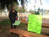

News And Politics
-
We've moved!

2/4/13, 9 a.m.
But don't worry – nothing's changing except for our URL.
-
Vegetarians less likely to die from heart disease

1/30/13, 2:20 p.m.
A new has found that vegetarians have about a third less risk of hospitalization or death from heart disease than carnivores do.
-
South LA intersection named after beloved local pastor
1/28/13, 1:50 p.m.
The intersection of 59th and Brentwood will now be named Dr. W.M. Brent Sr. Square.
-
A bit of news about OnCentral
1/28/13, 9:51 a.m.
Starting next Monday, our news will have a new home.
-
Gay black men face unique challenges in coming out, says study
1/24/13, 12:13 p.m.
Part of the challenge lies in the fear that they'll face a "double stigma," says the lead author.
-
Taking baby bites and tattoo ink: In health news today
1/24/13, 12:12 p.m.
OnCentral's daily round-up of the health headlines southside Angelenos ought to know about.
-
Security camera installation at Harvard Park complete
1/23/13, 4:04 p.m.
Police still don't know who shot 19-year-old Patrick Caruthers in the South L.A. park last September in the middle of the afternoon.
-
Car batteries are latest target for South LA thieves, say police
1/23/13, 10:40 a.m.
The captain of the LAPD's 77th St. Division said over a recent four-week period, more than 20 batteries were stolen within his division boundaries.
-
3 in 5 young people considering gun ownership, says poll
1/18/13, 2:12 p.m.
One-third of respondents reported growing up with a gun in their household; 36 percent also said they were "very worried" about gun violence.
-
Service central to remembering MLK, say local faith leaders
1/17/13, 12:39 p.m.
At a prayer breakfast in South L.A. on Thursday, community members gathered to talk about how to meaningfully carry on the legacy of Dr. Martin Luther King, Jr.
About Us
OnCentral is a site for the neighborhoods around Central Avenue. It's a news site where we not only provide information, but put the power of storytelling in your hands. Sign up and you can share your story or help an existing story grow by adding in your perspective or corrections.


- Most Viewed
- Most Commented